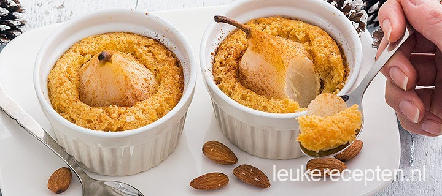

Stoofpeer in amandelcake
Deze ringen kan prima bij een hoofdmaaltijd, maar is ook een makkelijk te bereiden wat erg mooi is.
Ingredienten
- 100 gr suiker
- 1 liter water
- sap van 1 citroen
- 6 stoofpeertes
- 3 eieren
- 100 gram boter
- snufje zout
- 60 gr suiker
- 50 gr paneermeel
- 100 gr blanke amandelen
- snuf keneel
- 100 ml slagroom
Bereidingswijze
- Schil de stoofperen en laat het steeltje er boven aan zitten. Snijd het kroontje onderin er uit, je kunt van onderuit de peer nog meer uithollen maar dat is niet noodzakelijk.
- Breng 1 liter water, 100 gr suiker en sap van de citroen zachtjes aan de kook. Stoof de stoofpeertjes 30 minuten gaar. Laat ze daarna afkoelen.
- Verwarm de oven op 180 graden. Maak ondertussen het deeg. Mix 60 gr suiker met de boter en een snufje zout met een mixer in ca 5 min romig. Splits de eieren en mix de eierdooiers een voor een bij het boter mengsel.
- Maal de amandelen fijn in een keukenmachine. Mix het paneermeel, 80 gr van de gemalen amandelen en een snuf kaneel er door. Giet de slagroom er bij en mix nog kort door.
- Klop met schone mixer, in een schone kom de eiwitten stijf en schep door het andere mengsel. Vet de schaaltjes in met een beetje boter en bestrooi de binnenzijde met de overige 20 gr fijngemalen amandelen. Verdeel het amandelspijs-beslag in de schaaltjes tot ze ongeveer ¾ gevuld zijn.
- Druk de peer zachtjes in midden er in. Bak de taartjes in ongeveer 25 min gaar. Het kan zijn dat er een beetje vocht op de boevnzijde van de taartjes zit maar dit trekt binnen een paar minuten weg. Laat ze minimaal 10 min afkoelen voordat je ze serveert. Bestrooi met een snuf kaneel. Ze zijn zowel warm als koud lekker.

Tip ook lekker met slagroom, vanillesaus of chocoladesaus.